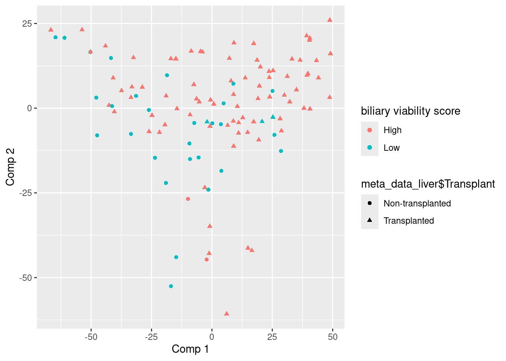
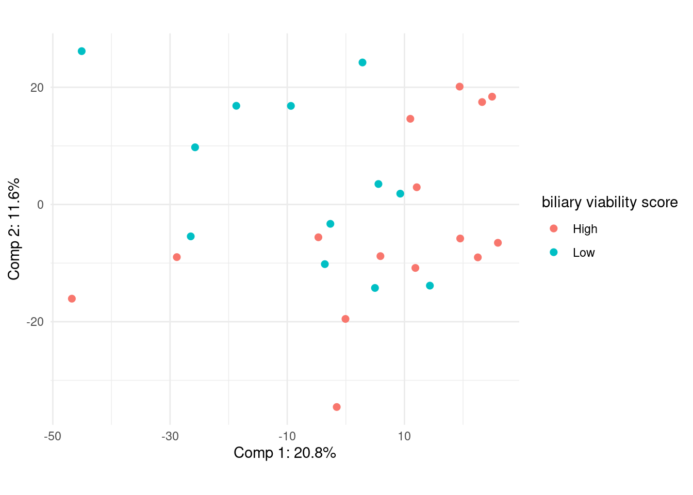
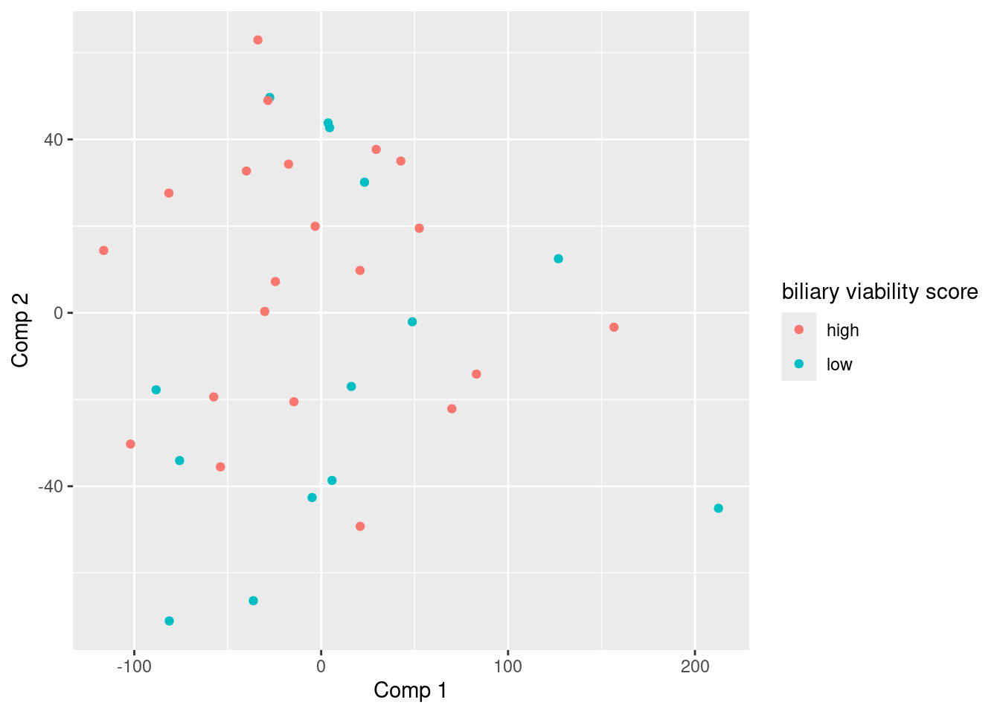

# Install packages
list.of.packages <- c("ggplot2", "tidyverse", "mdatools")
new.packages <- list.of.packages[!(list.of.packages %in% installed.packages()[,"Package"])]
if(length(new.packages)) install.packages(new.packages)logbook
Intro
This logbooks contains PC-analyses on multiple proteomics datasets, DESEQ2 analysis on transcriptomics datasets, and plots. All of the following chunks for proteomics were performed on many many version of our imputed data. This logbook only contains the most recent version of this data. Since the other data is no longer in use.
Meta stuff
Download and load the packages needed to run chunks.
library(ggplot2)
library(tidyverse)14-05-2025
Loading data
The data loaded here is not imputed yet, i will be using this data to test PCA on. Yamila is working on normalizing and imputing the data.
# Load count en metadata
load("/students/2024-2025/Thema08/liver-transplant/proteomics/data/count_data.Rdata")
load("/students/2024-2025/Thema08/liver-transplant/proteomics/data/meta_data.Rdata")First i will make all of the NA values 0, so i can perform PCA on this.
# Find all NA's and set those to 0
na_mask <- is.na(data_filtered)
data_filtered[na_mask] <- 0
head(data_filtered)# A tibble: 6 × 114
NMP_Bile_Proteomics_170 NMP_Bile_Proteomics_172 NMP_Bile_Proteomics_174
<dbl> <dbl> <dbl>
1 54.3 527. 0
2 0 0 0
3 0 21355. 20706.
4 0 0 0
5 6077. 28128. 192424.
6 0 1932. 493.
# ℹ 111 more variables: NMP_Bile_Proteomics_177 <dbl>,
# NMP_Bile_Proteomics_186 <dbl>, NMP_Bile_Proteomics_189 <dbl>,
# NMP_Bile_Proteomics_192 <dbl>, NMP_Bile_Proteomics_195 <dbl>,
# NMP_Bile_Proteomics_197 <dbl>, NMP_Bile_Proteomics_200 <dbl>,
# NMP_Bile_Proteomics_203 <dbl>, NMP_Bile_Proteomics_212 <dbl>,
# NMP_Bile_Proteomics_214 <dbl>, NMP_Bile_Proteomics_219 <dbl>,
# NMP_Bile_Proteomics_222 <dbl>, NMP_Bile_Proteomics_224 <dbl>, …The data contains alot of NA values, Yamila will fix this with imputation.
head(meta_data_liver)# A tibble: 6 × 6
Sample `Liver number` Timepoint Biliary viability sc…¹ Total BDI score grou…²
<chr> <dbl> <chr> <chr> <chr>
1 NMP_Bi… 34 30min Low High
2 NMP_Bi… 43 30min Low High
3 NMP_Bi… 38 30min High Low
4 NMP_Bi… 33 30min High High
5 NMP_Bi… 45 30min High High
6 NMP_Bi… 36 30min High High
# ℹ abbreviated names: ¹`Biliary viability score group`,
# ²`Total BDI score group`
# ℹ 1 more variable: Transplant <chr>This is the metadata, containing information about the different samples.
I will delete the samples with a variance of 0, this samples won’t contribute to the PCA, and removing them will speed the analysis up.
# Transpose data, and calculate the variance samples for every gene
# Then remove genes with a variance of 0.
X_t <- t(data_filtered)
variances <- apply(X_t, 2, var)
X_t <- X_t[, which(variances > 0)]
dim(X_t)[1] 114 4373Transform and scale the data with log2 and scaling
# Log2 transform the data
transformed <- log2(X_t + 1)
# Scale it
scaled <- scale(transformed, center = T, scale = T)Using the cov function i will calculate a covariance matrix, this will contain the linear correlations between 2 samples for every sample in the df.
# Calculate covariance matrix
covmat <- cov(t(scaled))From there i will calulate the eigenvectors with eigen, and the loadings.
# calculate eigen
eig <- eigen(covmat)
# Turn into loadings
loadings <- t(scaled) %*% eig$vectors
loadings <- t(t(loadings) / sqrt(colSums(loadings^2)))With these loadings i can project these loadings on our data, and get the scores. I can label the different components here and these scores can then be plotted.
# Project loadings on data.
scores <- scaled %*% loadings
scores_df <- as.data.frame(scores)
# Label scores with PC 1-n
col_n <- seq(ncol(scores))
col_names <- paste0("PC", col_n)
names(scores_df) <- col_names
head(scores_df)# A tibble: 6 × 114
PC1 PC2 PC3 PC4 PC5 PC6 PC7 PC8 PC9 PC10 PC11
<dbl> <dbl> <dbl> <dbl> <dbl> <dbl> <dbl> <dbl> <dbl> <dbl> <dbl>
1 -45.7 8.17 29.9 13.2 -10.4 -12.9 -17.1 -15.2 -6.66 9.49 -2.23
2 -32.0 7.69 27.7 3.35 -8.93 -6.24 -5.79 -2.05 -3.08 5.26 7.65
3 -7.00 1.85 21.9 -12.1 -2.72 -14.5 10.1 -1.19 1.18 -1.48 1.38
4 20.5 9.16 6.87 0.222 -15.6 3.66 -2.73 -3.38 3.60 -10.3 2.47
5 -16.7 -3.68 27.2 -9.14 -6.52 -13.6 3.02 -11.8 -6.46 -3.90 -0.707
6 -3.41 -2.00 23.4 -11.1 -3.33 -4.67 3.05 -0.728 3.09 -8.13 -1.57
# ℹ 103 more variables: PC12 <dbl>, PC13 <dbl>, PC14 <dbl>, PC15 <dbl>,
# PC16 <dbl>, PC17 <dbl>, PC18 <dbl>, PC19 <dbl>, PC20 <dbl>, PC21 <dbl>,
# PC22 <dbl>, PC23 <dbl>, PC24 <dbl>, PC25 <dbl>, PC26 <dbl>, PC27 <dbl>,
# PC28 <dbl>, PC29 <dbl>, PC30 <dbl>, PC31 <dbl>, PC32 <dbl>, PC33 <dbl>,
# PC34 <dbl>, PC35 <dbl>, PC36 <dbl>, PC37 <dbl>, PC38 <dbl>, PC39 <dbl>,
# PC40 <dbl>, PC41 <dbl>, PC42 <dbl>, PC43 <dbl>, PC44 <dbl>, PC45 <dbl>,
# PC46 <dbl>, PC47 <dbl>, PC48 <dbl>, PC49 <dbl>, PC50 <dbl>, PC51 <dbl>, …ggplot(
scores_df,
aes(x = PC1,
y = PC2,
color = meta_data_liver$`Biliary viability score group`,
shape = meta_data_liver$Transplant),) +
geom_point() +
scale_fill_brewer(palette="Dark2") +
labs(color = "biliary viability score")
Interesting:
- We see that most of the samples with a high biliary viability score appear more on the right of PC1, where ass the lower scores appear more left.
- There appears no real clustering on the PC2 between the 2 groups.
Key Insight
This could be explained by the amount of samples or genes with NA values.
I will now calculate, by hand, the explained variances for all of the components.
# Divide the eigen values by the sum of the eigen values for a percent.
explained_var <- as.data.frame(eig$values / sum(eig$values)) * 100
# Label these again
explained_var$PC <- paste0("PC", col_n)
names(explained_var) <- c("ex_var","PC")
head(explained_var)# A tibble: 6 × 2
ex_var PC
<dbl> <chr>
1 13.1 PC1
2 6.89 PC2
3 5.61 PC3
4 4.11 PC4
5 2.59 PC5
6 2.23 PC6 Conclusion: - We see that PC1 has the highest explained variance with 13.1%.
Note
This fairly low, explained by the high amount of missing data.
18-05-2025
PCA with mdatools
I want to compare the MDAtools library to my own PCA, to check if the results are the same. This will make it faster for me to perform PCA on the imputed data. Since i will not have to do this by hand.
library(mdatools)Performing PCA with this library can be done with the mdatools::pca function. I do not have imputed data, so i will use the data i used before.
model <- pca(transformed, center = T, scale = T, info ="Test PCA model")
model$ncomp[1] 20This model object holds all of the information that i would want to use. it holds the resulting scores model$res$cal$scores. Also the model$loadings. I can use these values to generate plots, altho mdatools also comes with a couple of plot functions.
I can use the plotScores function from mdatools to… plot the scores.
plotScores(model, )Conclusion: - We see that the structure of the plotted scores is the same as the PCA done earlier. Only flipped, which does not matter. - There is a difference in the explained variance, this plot shows 18.2% while my calculations show 13.1%. This can be explained by the fact that they use less ncomps (20 compared to my 114) - This plot is ugly, i cant add colors, or shapes to it. So i will use ggplot2 to plot the scores myself.
take-away
The library gives me the same results as doing it by hand. i will have to plot the scores via ggplot2
ggplot(
model$res$cal$scores,
aes(x = `Comp 1`,
y = `Comp 2`,
color = meta_data_liver$`Biliary viability score group`,
shape = meta_data_liver$Transplant),) +
geom_point() +
labs(color = "biliary viability score")
So i can use the model$res$calc$scores to plot in GGplot2. The resulting plot is basically indentical to the one i did by hand, but flipped. This confirms that i can use this library on the imputed data.
PCA imputed data
I performed PCA on data without any imputation. Yamila performed imputation on our data, which we can now load in.
Loading 30 minute data
This loads the imputed data for all of the readings 30 minutes after starting the NMP.
load("/students/2024-2025/Thema08/liver-transplant/proteomics/data/data_double_normalized_imputed_30min.Rdata")head(data_imp_30min) Low_NMP_Bile_Proteomics_170 Low_NMP_Bile_Proteomics_172
A1BG 15.66018 16.09418
A1CF 12.88906 11.18222
A2M 16.92685 18.63099
AARS1 14.31816 15.01197
AASDHPPT 11.68610 10.92308
ABAT 13.77583 14.17266
High_NMP_Bile_Proteomics_174 High_NMP_Bile_Proteomics_186
A1BG 15.964254 16.015035
A1CF 10.885262 10.496830
A2M 18.422913 19.311802
AARS1 14.160481 13.248159
AASDHPPT 8.951435 9.553974
ABAT 16.214409 12.679050
High_NMP_Bile_Proteomics_189 High_NMP_Bile_Proteomics_192
A1BG 16.923370 18.618216
A1CF 8.721371 12.006562
A2M 20.233163 18.294333
AARS1 13.703806 13.880163
AASDHPPT 8.727363 8.238927
ABAT 15.549881 14.477375
Low_NMP_Bile_Proteomics_195 High_NMP_Bile_Proteomics_197
A1BG 18.598524 18.630373
A1CF 11.868804 9.513961
A2M 18.191391 17.883349
AARS1 14.026935 13.395252
AASDHPPT 8.176094 9.513961
ABAT 14.947408 16.791080
High_NMP_Bile_Proteomics_200 High_NMP_Bile_Proteomics_203
A1BG 18.924466 16.349866
A1CF 9.808763 13.738986
A2M 18.482409 17.351425
AARS1 13.410396 13.714479
AASDHPPT 9.808763 8.451926
ABAT 15.099673 12.149530
Low_NMP_Bile_Proteomics_212 High_NMP_Bile_Proteomics_214
A1BG 16.867123 17.43807
A1CF 12.054737 10.14941
A2M 15.455603 18.74250
AARS1 16.298197 14.43579
AASDHPPT 13.715541 8.16185
ABAT 8.768289 16.20995
High_NMP_Bile_Proteomics_219 Low_NMP_Bile_Proteomics_222
A1BG 16.95180 18.533535
A1CF 10.42230 15.762718
A2M 18.79590 18.942531
AARS1 15.44026 14.765064
AASDHPPT 12.33932 8.705739
ABAT 17.16072 14.289887
High_NMP_Bile_Proteomics_224 Low_NMP_Bile_Proteomics_227
A1BG 17.73636 17.068294
A1CF 11.54458 8.458292
A2M 16.74202 16.947423
AARS1 13.23978 14.302114
AASDHPPT 11.24495 8.458292
ABAT 13.11919 14.454838
Low_NMP_Bile_Proteomics_231 High_NMP_Bile_Proteomics_233
A1BG 17.57901 18.054719
A1CF 12.03878 11.991810
A2M 16.68185 18.507930
AARS1 15.53370 14.551248
AASDHPPT 11.60242 9.003946
ABAT 14.90540 17.024798
Low_NMP_Bile_Proteomics_02 High_NMP_Bile_Proteomics_07
A1BG 17.346512 16.50826
A1CF 11.207419 12.00696
A2M 19.803291 19.30301
AARS1 14.960890 14.66415
AASDHPPT 8.275951 11.21832
ABAT 14.872878 12.71422
High_NMP_Bile_Proteomics_12 High_NMP_Bile_Proteomics_21
A1BG 17.99983 17.968001
A1CF 10.95863 8.992974
A2M 18.75882 19.228941
AARS1 14.83137 14.415034
AASDHPPT 11.06400 8.992974
ABAT 14.02323 9.439294
High_NMP_Bile_Proteomics_26 High_NMP_Bile_Proteomics_30
A1BG 18.026633 18.230076
A1CF 12.195954 13.358023
A2M 20.493063 18.595965
AARS1 13.968030 14.438650
AASDHPPT 9.263782 8.718243
ABAT 11.744032 12.955525
High_NMP_Bile_Proteomics_33 Low_NMP_Bile_Proteomics_40
A1BG 17.624076 18.05460
A1CF 13.061855 13.03641
A2M 17.874874 20.13188
AARS1 14.797514 15.26832
AASDHPPT 8.533948 11.22232
ABAT 11.160679 14.46329
Low_NMP_Bile_Proteomics_42 Low_NMP_Bile_Proteomics_45
A1BG 18.27722 17.46867
A1CF 13.50836 13.07002
A2M 19.72697 18.19473
AARS1 14.73418 15.75915
AASDHPPT 11.20550 10.97379
ABAT 11.30328 12.93007
High_NMP_Bile_Proteomics_51 Low_NMP_Bile_Proteomics_54
A1BG 18.66986 17.29569
A1CF 11.94468 13.37777
A2M 19.64512 18.91534
AARS1 14.70167 15.30538
AASDHPPT 10.95209 11.76437
ABAT 13.17348 10.80037
High_NMP_Bile_Proteomics_57 High_NMP_Bile_Proteomics_64
A1BG 18.477886 16.37212
A1CF 12.291511 13.63742
A2M 20.998362 18.19127
AARS1 14.913374 14.27339
AASDHPPT 9.616241 11.27215
ABAT 12.976023 11.32442
High_NMP_Bile_Proteomics_73 Low_NMP_Bile_Proteomics_76
A1BG 17.63713 18.502705
A1CF 13.40478 9.071309
A2M 19.60144 21.253459
AARS1 14.46381 13.990317
AASDHPPT 10.79342 10.989693
ABAT 12.36214 10.728378
High_NMP_Bile_Proteomics_84 High_NMP_Bile_Proteomics_90
A1BG 18.61790 16.47108
A1CF 13.62669 12.87986
A2M 19.58247 17.33647
AARS1 14.10235 14.73803
AASDHPPT 10.25688 11.97989
ABAT 11.91482 15.03158
High_NMP_Bile_Proteomics_92 High_NMP_Bile_Proteomics_97
A1BG 16.838387 17.266702
A1CF 12.987016 12.805013
A2M 19.284819 19.499844
AARS1 14.733982 14.978837
AASDHPPT 9.622186 9.959902
ABAT 11.944161 10.729120
High_NMP_Bile_Proteomics_101 Low_NMP_Bile_Proteomics_104
A1BG 17.85074 15.754426
A1CF 12.97539 13.370568
A2M 20.03995 18.774196
AARS1 15.08014 14.373368
AASDHPPT 10.01035 9.868485
ABAT 13.38986 13.114448
High_NMP_Bile_Proteomics_108
A1BG 17.32355
A1CF 12.49745
A2M 18.42070
AARS1 15.02888
AASDHPPT 11.51947
ABAT 13.51624The names of the samples no longer align with my metadata, “High_NMP_Bile_Proteomics_108” != “NMP_Bile_Proteomics_108” i will remove the “High_/Low_” part from the names.
library(stringr)# Matrix to dataframe
df_data <- as.data.frame(data_imp_30min)
# Remove the High or Low part
bil_via <- str_extract(names(df_data), "[^_]+")
sample_names <- str_extract(names(df_data), "_(.*)") %>%
str_replace("^_", "")
head(sample_names)[1] "NMP_Bile_Proteomics_170" "NMP_Bile_Proteomics_172"
[3] "NMP_Bile_Proteomics_174" "NMP_Bile_Proteomics_186"
[5] "NMP_Bile_Proteomics_189" "NMP_Bile_Proteomics_192"I can use these sample names on our metadata to create a filtered metadata df. This metadata will only contain the samples that are also present in our dataframe.
meta_data_liver_filtered <- meta_data_liver %>%
dplyr::filter((Sample %in% sample_names) & (Timepoint == '30min'))
head(meta_data_liver_filtered)# A tibble: 6 × 6
Sample `Liver number` Timepoint Biliary viability sc…¹ Total BDI score grou…²
<chr> <dbl> <chr> <chr> <chr>
1 NMP_Bi… 34 30min Low High
2 NMP_Bi… 43 30min Low High
3 NMP_Bi… 38 30min High Low
4 NMP_Bi… 45 30min High High
5 NMP_Bi… 36 30min High High
6 NMP_Bi… 44 30min High Low
# ℹ abbreviated names: ¹`Biliary viability score group`,
# ²`Total BDI score group`
# ℹ 1 more variable: Transplant <chr>This metadata df only contains the samples present in the imputed data. This can now be used in plots (color and shapes for example).
# Turn the protein rownames to a column
df_data <- df_data %>%
tibble::rownames_to_column("protein")PCA 30 minuten
i will now perform a PC-analysis on the imputed data. This data contains samples and data 30 minutes after starting NPM. I will perform this analysis using the mdatools library. Yamila already normalised and scaled this data.
model <- pca(t(data_imp_30min), center = T, scale = T)This model object contains all of the information of the principal component analysis. I can use this data to plot, and visualise the analysis.
ggplot(
model$res$cal$scores,
aes(x = `Comp 1`,
y = `Comp 2`,
colour = meta_data_liver_filtered$`Biliary viability score group`),) +
geom_point(size = 2) +
scale_x_continuous(breaks = seq(-20, 70, 20)) +
scale_y_continuous(breaks = seq(-40, 30, 20)) +
coord_fixed() +
theme_minimal() +
labs(color = "biliary viability score",
shape = "Transplanted",
x = paste("Comp 1: ", signif(model$res$cal$expvar[1], digits = 3), "%", sep = ""),
y = paste("Comp 2: ", signif(model$res$cal$expvar[2], digits = 3), "%", sep = ""))Conclusion:
- We see 4 clear outliers on Comp 1, 1 low viability and 3 samples with a high viability
- The scores do not show a clear seperating line between the 2 groups
- High viability is a bit more spread over comp 2, most low viablity samples appear to be a bit more clustered near and above the 0 on the second component.
key-note
Our starting data had lots of NA’s, we used imputation to fill these missing values. This makes these results, like PCA, less reliable. The findings from the figure above display no real seperation between the groups, this can absolutely be caused by imputation.
I would like to find the 4 outliers on the left, so we can keep an eye on those and possibly look at why they are outliers.
scores_df <- as.data.frame(model$res$cal$scores)
# Find the samples that have a score of 30 or higher for component 1
outlier_samples <- scores_df %>%
tibble::rownames_to_column("Sample") %>%
mutate(Sample = sub("^[^_]+_", "", Sample)) %>%
dplyr::filter(`Comp 1` > 30)
outlier_samples# A tibble: 4 × 21
Sample `Comp 1` `Comp 2` `Comp 3` `Comp 4` `Comp 5` `Comp 6` `Comp 7` `Comp 8`
<chr> <dbl> <dbl> <dbl> <dbl> <dbl> <dbl> <dbl> <dbl>
1 NMP_B… 48.7 -11.9 36.6 36.3 -29.2 15.5 6.91 -5.96
2 NMP_B… 65.5 11.0 -5.82 -22.9 7.56 -7.24 18.1 -17.4
3 NMP_B… 40.1 15.0 -28.2 -0.0367 18.0 13.9 -2.36 4.05
4 NMP_B… 58.0 11.0 -7.56 -8.04 2.54 -2.46 -2.60 11.4
# ℹ 12 more variables: `Comp 9` <dbl>, `Comp 10` <dbl>, `Comp 11` <dbl>,
# `Comp 12` <dbl>, `Comp 13` <dbl>, `Comp 14` <dbl>, `Comp 15` <dbl>,
# `Comp 16` <dbl>, `Comp 17` <dbl>, `Comp 18` <dbl>, `Comp 19` <dbl>,
# `Comp 20` <dbl>Here we see the 4 outliers from the PCA, we will possibly keep an eye on those when performing other analyses.
I would like to see the explained variances for the first 20 components. The mdatools gives us a function for this, so this can be easily plotted.
plotVariance(model)
Conclusion:
- They used a line-graph which implies a connection between the different components which is not the case. Cannot be used for a paper, but works fine for the logbook.
- comp 1 has an explained variance of about 16%, The explained variance quickly lowers to < 5% after the 5th component, there is no use in checking out the other components.
I would like to see the what the genes are with the highest loading, since these genes are the most important ones to look at. Yamila was having issues with the adjusted p-values of her tests being too high, caused by the high amount of genes we use. We discussed a possible solution for this and ended up with using the gene list, generated in the following code, to filter the data and only perform the statistical tests on that data. This will make the adjusted p-values lower, giving us more results. We did this for PC1 and PC2, but i just rewrote the code for PC2. So it is only shown once here.
# Grab the loadings for pc1
loadings <- model$loadings
loadings$pc1 <- loadings[,2]Warning in loadings$pc1 <- loadings[, 2]: Coercing LHS to a list# Plot the loadings
plot(loadings$pc1)
We see a higher density closer to loadings near 0.
# Order the square of these loadings to get the order of genes
argsort <- order(loadings$pc1^2, decreasing = T)
plot(loadings$pc1[argsort])
We see the loadings go from absolute values of .045 to 0.
top_x_genes <- df_data[argsort, 1]
head(top_x_genes)[1] "PSMD12" "IDH1" "PSMD11" "SHMT2" "ACAA1" "PSMA6" This top_x_genes list contains the genes with the order of loadings, which can be used by yamila to filter her dataset.
this code saves the list to our school server, where yamila can load it from.
save(top_x_genes, file = "/students/2024-2025/Thema08/liver-transplant/proteomics/top_x_genes/top_x_genes_30_final_pc1.Rdata")Mapping transcriptomics data
Jarno was having trouble with the mapping of our transcriptomics data, there was a mapping rate of 35%, way to low. I want to check the quality of our data first, before we try anything else. I will do this using Falco and multiqc.
This will create a falco rapport for all of our transcriptomics data.
ls /students/2024-2025/Thema08/liver-transplant/transcriptomics/fastq_data/ | \
parallel "/students/2024-2025/Thema05/BlaasKanker/Transcriptomics/tools/bin/falco /students/2024-2025/Thema08/liver-transplant/transcriptomics/fastq_data/{} -o /students/2024-2025/Thema08/liver-transplant/transcriptomics/falco/{}_fastqc_report"And this will create one usable multiqc file. The results of this can be found on the right-side of this page.
multiqc /students/2024-2025/Thema08/liver-transplant/transcriptomics/falco/* -o /students/2024-2025/Thema08/liver-transplant/transcriptomics/multiqc/The results of this were weird to say the least, either the reverse or the forward version of the sample was weird. The entire file only contained reads with a basepair length of 6. These same files also had a duplicate rate of 100%. This was unusable for our mapping. We ended up not using these files for mapping after seeking guidance from multiple teachers.
19-05-2025
I will now map these files again, and we will have to work with that for now, no matter the quality. ### Mapping transcriptomics This maps the data to the human reference genome. Using STAR.
cat /students/2024-2025/Thema05/BlaasKanker/Transcriptomics/mouse_cell_SRR.txt | \
parallel 'STAR --runThreadN 6 ' \
'--genomeDir /students/2024-2025/Thema05/BlaasKanker/Transcriptomics/tools/star/index_GRCm39/ ' \
'--readFilesIn /students/2024-2025/Thema08/liver-transplant/transcriptomics/fastq_data/ERR12161053_1.fastq.gz /students/2024-2025/Thema08/liver-transplant/transcriptomics/fastq_data/ERR12161053_2.fastq.gz ' \
'--outSAMtype BAM SortedByCoordinate ' \
'--quantMode GeneCounts ' \
'--genomeLoad LoadAndRemove' \
'--limitBAMsortRAM 2000000000 ' \
'--outFileNamePrefix /students/2024-2025/Thema08/liver-transplant/transcriptomics/STAR/test_star_'This will take a while to run. I will start working on the 150 minute proteomics data, that yamila shared with us.
Pca 150 minute data
Loading the data
load("/students/2024-2025/Thema08/liver-transplant/proteomics/data/data_double_normalized_imputed_150min.Rdata")These have the same naming convention, which i will remove just like i did with the 30 minute data.
df_data_150 <- as.data.frame(data_imp_150min)
# Once again remove the high and low parts of the names
bil_via_150 <- str_extract(names(df_data_150), "[^_]+")
sample_names_150 <- str_extract(names(df_data_150), "_(.*)") %>%
str_replace("^_", "")
sample_names_150 [1] "NMP_Bile_Proteomics_171" "NMP_Bile_Proteomics_173"
[3] "NMP_Bile_Proteomics_187" "NMP_Bile_Proteomics_196"
[5] "NMP_Bile_Proteomics_204" "NMP_Bile_Proteomics_213"
[7] "NMP_Bile_Proteomics_215" "NMP_Bile_Proteomics_225"
[9] "NMP_Bile_Proteomics_228" "NMP_Bile_Proteomics_03"
[11] "NMP_Bile_Proteomics_09" "NMP_Bile_Proteomics_14"
[13] "NMP_Bile_Proteomics_31" "NMP_Bile_Proteomics_34"
[15] "NMP_Bile_Proteomics_41" "NMP_Bile_Proteomics_43"
[17] "NMP_Bile_Proteomics_46" "NMP_Bile_Proteomics_50"
[19] "NMP_Bile_Proteomics_52" "NMP_Bile_Proteomics_55"
[21] "NMP_Bile_Proteomics_65" "NMP_Bile_Proteomics_74"
[23] "NMP_Bile_Proteomics_85" "NMP_Bile_Proteomics_91"
[25] "NMP_Bile_Proteomics_98" "NMP_Bile_Proteomics_106"
[27] "NMP_Bile_Proteomics_109"head(df_data_150)# A tibble: 6 × 27
Low_NMP_Bile_Proteomics_171 Low_NMP_Bile_Proteomics_173 High_NMP_Bile_Proteo…¹
<dbl> <dbl> <dbl>
1 16.7 17.1 16.8
2 10.8 11.9 12.0
3 18.4 18.5 20.0
4 14.6 15.3 13.3
5 12.2 12.3 13.0
6 13.9 14.8 16.6
# ℹ abbreviated name: ¹High_NMP_Bile_Proteomics_187
# ℹ 24 more variables: Low_NMP_Bile_Proteomics_196 <dbl>,
# High_NMP_Bile_Proteomics_204 <dbl>, Low_NMP_Bile_Proteomics_213 <dbl>,
# High_NMP_Bile_Proteomics_215 <dbl>, High_NMP_Bile_Proteomics_225 <dbl>,
# Low_NMP_Bile_Proteomics_228 <dbl>, Low_NMP_Bile_Proteomics_03 <dbl>,
# High_NMP_Bile_Proteomics_09 <dbl>, High_NMP_Bile_Proteomics_14 <dbl>,
# High_NMP_Bile_Proteomics_31 <dbl>, High_NMP_Bile_Proteomics_34 <dbl>, …I will also generate a new metadata frame, which will contain the same samples as the 150 minute data has.
meta_data_liver_filtered_150 <- meta_data_liver %>%
dplyr::filter((Sample %in% sample_names_150) & (Timepoint == '150min'))
head(meta_data_liver_filtered_150)# A tibble: 6 × 6
Sample `Liver number` Timepoint Biliary viability sc…¹ Total BDI score grou…²
<chr> <dbl> <chr> <chr> <chr>
1 NMP_Bi… 34 150min Low High
2 NMP_Bi… 43 150min Low High
3 NMP_Bi… 45 150min High High
4 NMP_Bi… 39 150min Low High
5 NMP_Bi… 32 150min High Low
6 NMP_Bi… 47 150min Low Low
# ℹ abbreviated names: ¹`Biliary viability score group`,
# ²`Total BDI score group`
# ℹ 1 more variable: Transplant <chr>The samples in the metadata now align with the input data, so this file can be used in plots as color and or shapes.
df_data_150 <- df_data_150 %>%
tibble::rownames_to_column("protein")I will perform the pca function from mdatools on this data.
model_150 <- pca(t(df_data_150[,2:ncol(df_data_150)]), center = T, scale = T)And plot the scores
ggplot(
model_150$res$cal$scores,
aes(x = `Comp 1`,
y = `Comp 2`,
color = meta_data_liver_filtered_150$`Biliary viability score group`,),) +
geom_point(size = 2) +
coord_fixed(ratio = 1) +
scale_x_continuous(breaks = seq(-50, 30, 20)) +
scale_y_continuous(breaks = seq(-40, 30, 20)) +
theme_minimal() +
labs(color = "biliary viability score",
shape = "Transplanted",
x = paste("Comp 1: ", signif(model_150$res$cal$expvar[1], digits = 3), "%", sep = ""),
y = paste("Comp 2: ", signif(model_150$res$cal$expvar[2], digits = 3), "%", sep = ""))
Conclusion:
- We see no clear seperation between the 2 groups.
- A couple of low viability scores are “clustered” on the top left site, there are no high samples in that “cluster” but this does not appear concrete.
I want to see the explained variances and see how they fall off. I will use the same function as before.
plotVariance(model_150)
We see that component 1 has the highest explained variance of 21%. We also see that it falls off quickly, with PC4 being around 5%. I see no reason to look at the other components.
Im going to create a gene list for PC1 and 2 again for yamila to use, just like i did with the 30 minute data.
# Get loadings and order these
loadings_150 <- model_150$loadings
pc1_150 <- loadings_150[,1]
argsort_150 <- order(pc1_150^2, decreasing = T)# Get the genes
top_x_genes_150 <- df_data_150[argsort_150, 1]
head(top_x_genes_150)[1] "HPN" "ITIH4" "ANPEP" "SLC5A1" "SERPING1" "ABCB1" # Save it
save(top_x_genes_150, file = "/students/2024-2025/Thema08/liver-transplant/proteomics/top_x_genes/top_x_genes_150_final_pc1.Rdata")This will make it so yamila can filter based on these genes, and maybe get more significant results. Jasper and i also tried to use the loadings for pathview, which in theory works but since the loadings are too small (max = 0.04) they did not show up in the actual image, i assume a dataset with higher loadings would actually work. This concludes my proteomics research. I will focus on the transcriptomics data now
Conclusion proteomics
The principal component analyses revealed that there is no real seperation between the groups for both 30 and 150 minute samples. This can be blamed on the high amounts of NA’s and thus the imputation we had to perform on many samples. We used the loadings to send an ordered gene list over to the statistical testing to hopefully fish some results from there.
20-05-2025
Mapping with star ended up giving us an even lower mapping rate, so we are going back to hisat. ### Mapping hisat
sbatch --partition=assemblix \
--job-name=hisat2 \
--ntasks=1 \
--cpus-per-task=8 \
--mem=300G \
--time=12:00:00 \
--wrap="ls /students/2024-2025/Thema08/liver-transplant/transcriptomics/fastq_data/*.filtered | parallel -j 8 'hisat2 -x /students/2024-2025/Thema08/liver-transplant/transcriptomics/ref_hg38/grch38_tran/genome_tran -U {} -S /students/2024-2025/Thema08/liver-transplant/transcriptomics/hisat2/{/.}.sam --phred33 --mm'"This will map the transcriptomics data to the human reference genome.
21-05-2025
Featurecounts
I will use featurecounts to extract the count data from the mapped files.
featureCounts -T 5 -t exon -g gene_id -a /students/2024-2025/Thema08/liver-transplant/transcriptomics/ref_hg38/grch38_tran/Homo_sapiens.GRCh38.84.gtf -o counts.txt /students/2024-2025/Thema08/liver-transplant/transcriptomics/hisat2/*.samI can load this data into R, giving us transcriptomics count data.
transcriptomics_data <- read.table("/students/2024-2025/Thema08/liver-transplant/transcriptomics/featurecounts/counts.txt", skip = 1, header = T)
head(transcriptomics_data)# A tibble: 6 × 41
Geneid Chr Start End Strand Length X.students.2024.2025…¹
<chr> <chr> <chr> <chr> <chr> <int> <int>
1 ENSG00000223972 1;1;1;1;1;1;… 1186… 1222… +;+;+… 1735 0
2 ENSG00000227232 1;1;1;1;1;1;… 1440… 1450… -;-;-… 1351 0
3 ENSG00000278267 1 17369 17436 - 68 0
4 ENSG00000243485 1;1;1;1;1 2955… 3003… +;+;+… 1021 0
5 ENSG00000274890 1 30366 30503 + 138 0
6 ENSG00000237613 1;1;1;1;1 3455… 3517… -;-;-… 1219 0
# ℹ abbreviated name:
# ¹X.students.2024.2025.Thema08.liver.transplant.transcriptomics.hisat2.ERR12161053_2.fastq.sam
# ℹ 34 more variables:
# X.students.2024.2025.Thema08.liver.transplant.transcriptomics.hisat2.ERR12161054_1.fastq.sam <int>,
# X.students.2024.2025.Thema08.liver.transplant.transcriptomics.hisat2.ERR12161055_1.fastq.sam <int>,
# X.students.2024.2025.Thema08.liver.transplant.transcriptomics.hisat2.ERR12161056_2.fastq.sam <int>,
# X.students.2024.2025.Thema08.liver.transplant.transcriptomics.hisat2.ERR12161057_2.fastq.sam <int>, …We also have meta data for these samples, we sadly cannot perform multiomics since the metadata is impossible to align.
transcriptomics_metadata <- read.table("/students/2024-2025/Thema08/liver-transplant/data/E-MTAB-13501.sdrf.txt", header = T, sep = "\t")
head(transcriptomics_metadata)# A tibble: 6 × 38
Source.Name Comment.ENA_SAMPLE. Comment.BioSD_SAMPLE. Characteristics.organi…¹
<chr> <chr> <chr> <chr>
1 R10 ERS16523058 SAMEA114541729 Homo sapiens
2 R10 ERS16523058 SAMEA114541729 Homo sapiens
3 R100 ERS16523059 SAMEA114541730 Homo sapiens
4 R100 ERS16523059 SAMEA114541730 Homo sapiens
5 R102 ERS16523060 SAMEA114541731 Homo sapiens
6 R102 ERS16523060 SAMEA114541731 Homo sapiens
# ℹ abbreviated name: ¹Characteristics.organism.
# ℹ 34 more variables: Characteristics.individual. <int>,
# Characteristics.age. <int>, Unit.time.unit. <chr>, Term.Source.REF <chr>,
# Term.Accession.Number <chr>, Characteristics.developmental.stage. <chr>,
# Characteristics.sex. <chr>, Characteristics.organism.part. <chr>,
# Characteristics.total.bdi.score.group. <chr>,
# Characteristics.biliary.viability.score.group. <chr>, …Our current count file contains GeneIDs which is ugly. So im going to use annotationDdi to create a new column that contains the matching gene symbol.
library(AnnotationDbi)
library(org.Hs.eg.db)
# Get gene ids
genes <- transcriptomics_data$Geneid
# Select the genesymbols from the human genome and add these to our dataframe
ann <- select(org.Hs.eg.db, keys = genes, keytype = 'ENSEMBL', columns = 'SYMBOL')'select()' returned 1:many mapping between keys and columnstranscriptomics_data <- merge(transcriptomics_data, ann, by.x = "Geneid", by.y = "ENSEMBL", all.x = TRUE)
transcriptomics_data <- transcriptomics_data %>%
dplyr::select(c(Geneid, SYMBOL), everything())
head(transcriptomics_data)# A tibble: 6 × 42
Geneid SYMBOL Chr Start End Strand Length X.students.2024.2025…¹
<chr> <chr> <chr> <chr> <chr> <chr> <int> <int>
1 ENSG00000000003 TSPAN6 X;X;… 1006… 1006… -;-;-… 4535 224
2 ENSG00000000005 TNMD X;X;… 1005… 1005… +;+;+… 1610 0
3 ENSG00000000419 DPM1 20;2… 5093… 5093… -;-;-… 1207 113
4 ENSG00000000457 SCYL3 1;1;… 1698… 1698… -;-;-… 6883 12
5 ENSG00000000460 C1orf1… 1;1;… 1696… 1696… +;+;+… 5967 0
6 ENSG00000000938 FGR 1;1;… 2761… 2761… -;-;-… 3474 4
# ℹ abbreviated name:
# ¹X.students.2024.2025.Thema08.liver.transplant.transcriptomics.hisat2.ERR12161053_2.fastq.sam
# ℹ 34 more variables:
# X.students.2024.2025.Thema08.liver.transplant.transcriptomics.hisat2.ERR12161054_1.fastq.sam <int>,
# X.students.2024.2025.Thema08.liver.transplant.transcriptomics.hisat2.ERR12161055_1.fastq.sam <int>,
# X.students.2024.2025.Thema08.liver.transplant.transcriptomics.hisat2.ERR12161056_2.fastq.sam <int>,
# X.students.2024.2025.Thema08.liver.transplant.transcriptomics.hisat2.ERR12161057_2.fastq.sam <int>, …This gives us a new SYMBOL column that contains the gene symbols. ## 22-05-2025
PCA and transcriptomics processing
I will transform the names again so these can be linked to our metadata sice they do not align right now.
names_transcript <- names(transcriptomics_data)
# extract the real sample name
sample_name <- sub(".*(ERR[0-9]+).*", "\\1", names_transcript)
sample_name [1] "Geneid" "SYMBOL" "Chr" "Start" "End"
[6] "Strand" "Length" "ERR12161053" "ERR12161054" "ERR12161055"
[11] "ERR12161056" "ERR12161057" "ERR12161058" "ERR12161059" "ERR12161060"
[16] "ERR12161061" "ERR12161062" "ERR12161063" "ERR12161064" "ERR12161065"
[21] "ERR12161066" "ERR12161067" "ERR12161068" "ERR12161069" "ERR12161070"
[26] "ERR12161071" "ERR12161072" "ERR12161073" "ERR12161074" "ERR12161075"
[31] "ERR12161076" "ERR12161077" "ERR12161078" "ERR12161079" "ERR12161080"
[36] "ERR12161081" "ERR12161082" "ERR12161083" "ERR12161084" "ERR12161085"
[41] "ERR12161086" "ERR12161087"# and use these as the names
names(transcriptomics_data) <- sample_name
head(transcriptomics_data)# A tibble: 6 × 42
Geneid SYMBOL Chr Start End Strand Length ERR12161053 ERR12161054
<chr> <chr> <chr> <chr> <chr> <chr> <int> <int> <int>
1 ENSG00000000003 TSPAN6 X;X;… 1006… 1006… -;-;-… 4535 224 105
2 ENSG00000000005 TNMD X;X;… 1005… 1005… +;+;+… 1610 0 0
3 ENSG00000000419 DPM1 20;2… 5093… 5093… -;-;-… 1207 113 37
4 ENSG00000000457 SCYL3 1;1;… 1698… 1698… -;-;-… 6883 12 9
5 ENSG00000000460 C1orf… 1;1;… 1696… 1696… +;+;+… 5967 0 2
6 ENSG00000000938 FGR 1;1;… 2761… 2761… -;-;-… 3474 4 4
# ℹ 33 more variables: ERR12161055 <int>, ERR12161056 <int>, ERR12161057 <int>,
# ERR12161058 <int>, ERR12161059 <int>, ERR12161060 <int>, ERR12161061 <int>,
# ERR12161062 <int>, ERR12161063 <int>, ERR12161064 <int>, ERR12161065 <int>,
# ERR12161066 <int>, ERR12161067 <int>, ERR12161068 <int>, ERR12161069 <int>,
# ERR12161070 <int>, ERR12161071 <int>, ERR12161072 <int>, ERR12161073 <int>,
# ERR12161074 <int>, ERR12161075 <int>, ERR12161076 <int>, ERR12161077 <int>,
# ERR12161078 <int>, ERR12161079 <int>, ERR12161080 <int>, …The DESEQ2 analysis downstream complained of duplicates, so i am removing these here. There are multiple types of duplicated. Duplicate geneID’s have duplicate counts aswell, so i will remove all of the duplicates but make sure that 1 remains. Some symbols also have duplicated, but with different counts so i add these up. Not the best solution but works.
# remove duplicate geneID's
transcriptomics_data <- transcriptomics_data %>%
distinct(Geneid, .keep_all = TRUE)
# addup symbols that are duplicated
transcriptomics_data <- transcriptomics_data %>%
group_by(SYMBOL) %>%
mutate(across(starts_with("ERR"), sum, na.rm = TRUE)) %>%
distinct(SYMBOL, .keep_all = TRUE)
# remove all of the NA values.
sum(is.na(transcriptomics_data$SYMBOL)) # == 1[1] 1transcriptomics_data <- transcriptomics_data %>%
filter(!is.na(SYMBOL))Now the count data is deduplicated (even tho it already should have been according to the paper.)
I am seperating the count data from some of the other data in the dataframe like the symbols and ids
count_data_transcript <- transcriptomics_data[,8:ncol(transcriptomics_data)]
head(count_data_transcript)# A tibble: 6 × 35
ERR12161053 ERR12161054 ERR12161055 ERR12161056 ERR12161057 ERR12161058
<int> <int> <int> <int> <int> <int>
1 224 105 206 312 280 171
2 0 0 0 0 0 0
3 113 37 155 70 67 78
4 12 9 22 15 11 22
5 0 2 0 1 0 1
6 4 4 6 9 2 7
# ℹ 29 more variables: ERR12161059 <int>, ERR12161060 <int>, ERR12161061 <int>,
# ERR12161062 <int>, ERR12161063 <int>, ERR12161064 <int>, ERR12161065 <int>,
# ERR12161066 <int>, ERR12161067 <int>, ERR12161068 <int>, ERR12161069 <int>,
# ERR12161070 <int>, ERR12161071 <int>, ERR12161072 <int>, ERR12161073 <int>,
# ERR12161074 <int>, ERR12161075 <int>, ERR12161076 <int>, ERR12161077 <int>,
# ERR12161078 <int>, ERR12161079 <int>, ERR12161080 <int>, ERR12161081 <int>,
# ERR12161082 <int>, ERR12161083 <int>, ERR12161084 <int>, …I can now normalise and scale this data
the metadata contains every sample twice (reverse and forward) i will remove these.
transcriptomics_metadata_dups_rem <- transcriptomics_metadata[!duplicated(transcriptomics_metadata[c('Comment.ENA_SAMPLE.')]),]# Transpose data
count_transcript_t <- t(count_data_transcript)
# Remove genes with variance of 0
variances_transcript <- apply(count_transcript_t, 2, var)
count_transcript_t <- count_transcript_t[, which(variances_transcript > 0)]
dim(count_transcript_t)[1] 35 22143# Normalize and scale it
transformed_trans <- log2(count_transcript_t + 1)
scaled_trans <- scale(transformed_trans, center = T, scale = T)Performing PCa on this scaled and normalized data
model_transcriptomics <- pca(scaled_trans, center = T, scale = T, info = "Transcriptomics",ncomp = ncol(count_data_transcript))ggplot(
model_transcriptomics$res$cal$scores,
aes(x = `Comp 1`,
y = `Comp 2`,
color = transcriptomics_metadata_dups_rem$Factor.Value.biliary.viability.score.group.),) +
geom_point() +
labs(color = "biliary viability score",
shape = "Transplanted")
Conclusion:
- No real seperation between low and high viability This can be caused by the garbage input data and the extreme low amount of counts we managed to get out of it.
plotVariance(model_transcriptomics)Most of the variance is explained by the first component, it quickly falls off after that too. I want to see if we can see anything interesting in the loadings of the first component.
loadings_transcriptomics <- model_transcriptomics$loadings
plot(loadings_transcriptomics[,1])
A lower density of loadings above 0 appears for all genes until a bit above 15000. After that the loadings appear to be flipped.
# Sort the loadings
argsort_transscript <- order(loadings_transcriptomics[,1]^2, decreasing = T)
plot(loadings_transcriptomics[,1][argsort_transscript])
We see loadings going from (aboslute values) 0.010 to 0.
genes_pca1_transcript <- transcriptomics_data[argsort_transscript,2]
head(genes_pca1_transcript)# A tibble: 6 × 1
# Groups: SYMBOL [6]
SYMBOL
<chr>
1 OLFML3
2 NAT2
3 SGCE
4 ACTG2
5 SMCO4
6 CHERP Genes ordered based on loading, done in advanced if it is needed for deseq2. ### DESEQ2 I will now perform a differential gene expression analysis on our transcriptomics data.
library(DESeq2)25-05-2025
DESEQ2
I have to create coldata for deseq, so it knows what groups i want to focus on
coldata <- transcriptomics_metadata_dups_rem %>%
# Get all the right samples
dplyr::filter(Comment.ENA_RUN. %in% names(count_data_transcript)) %>%
# Only select the viability columns and sample names
# Sample names to rownames of df
dplyr::select(Comment.ENA_RUN., Characteristics.biliary.viability.score.group.) %>%
tibble::column_to_rownames("Comment.ENA_RUN.")
head(coldata)# A tibble: 6 × 1
Characteristics.biliary.viability.score.group.
<chr>
1 low
2 high
3 low
4 high
5 low
6 low This contains the sample name and if it has a low or high viability. I will now transform the gene symbols to the rownames so it can be used in plots and figures.
# Select all of the count data, with gene symbols as rownames.
row.names(transcriptomics_data) <- NULL
count_data_dds <- transcriptomics_data[,c(2,8:ncol(transcriptomics_data))] %>%
tibble::column_to_rownames("SYMBOL")I will now run deseq2 on this. with the count data, and coldata.
dds <- DESeqDataSetFromMatrix(countData = count_data_dds,
colData = coldata,
design = ~ Characteristics.biliary.viability.score.group.)Warning in DESeqDataSet(se, design = design, ignoreRank): some variables in
design formula are characters, converting to factorsdds <- DESeq(dds)estimating size factorsestimating dispersionsgene-wise dispersion estimatesmean-dispersion relationshipfinal dispersion estimatesfitting model and testing-- replacing outliers and refitting for 99 genes
-- DESeq argument 'minReplicatesForReplace' = 7
-- original counts are preserved in counts(dds)estimating dispersionsfitting model and testingWe can now look into these results and summarise them.
resultsNames(dds)[1] "Intercept"
[2] "Characteristics.biliary.viability.score.group._low_vs_high"res <- results(dds, name = "Characteristics.biliary.viability.score.group._low_vs_high")
head(res)log2 fold change (MLE): Characteristics.biliary.viability.score.group. low vs high
Wald test p-value: Characteristics.biliary.viability.score.group. low vs high
DataFrame with 6 rows and 6 columns
baseMean log2FoldChange lfcSE stat pvalue padj
<numeric> <numeric> <numeric> <numeric> <numeric> <numeric>
TSPAN6 221.335722 -0.0365803 0.121265 -0.301657 0.762913 0.998702
TNMD 0.073575 0.7214463 3.027828 0.238272 0.811670 0.998702
DPM1 75.493961 0.1064914 0.106454 1.000355 0.317139 0.998702
SCYL3 16.384121 0.2654426 0.212704 1.247945 0.212051 0.998702
C1orf112 1.934195 -0.9192006 0.695982 -1.320724 0.186593 0.998702
FGR 9.695265 0.1292737 0.363188 0.355942 0.721884 0.998702These results contain genes and the differences betweeen low and high viability. These can be scaled with the lfcShrink function.
resLFC <- lfcShrink(dds, coef = "Characteristics.biliary.viability.score.group._low_vs_high")
head(resLFC)log2 fold change (MAP): Characteristics.biliary.viability.score.group. low vs high
Wald test p-value: Characteristics.biliary.viability.score.group. low vs high
DataFrame with 6 rows and 5 columns
baseMean log2FoldChange lfcSE pvalue padj
<numeric> <numeric> <numeric> <numeric> <numeric>
TSPAN6 221.335722 -2.57691e-06 0.00144259 0.762913 0.998702
TNMD 0.073575 3.11193e-07 0.00144269 0.811670 0.998702
DPM1 75.493961 1.21373e-05 0.00144259 0.317139 0.998702
SCYL3 16.384121 6.15541e-06 0.00144267 0.212051 0.998702
C1orf112 1.934195 -1.88261e-06 0.00144269 0.186593 0.998702
FGR 9.695265 1.78823e-06 0.00144268 0.721884 0.998702summary(res)
out of 22142 with nonzero total read count
adjusted p-value < 0.1
LFC > 0 (up) : 0, 0%
LFC < 0 (down) : 0, 0%
outliers [1] : 0, 0%
low counts [2] : 1, 0.0045%
(mean count < 0)
[1] see 'cooksCutoff' argument of ?results
[2] see 'independentFiltering' argument of ?resultsNot suprising, the data contain 0 significant up or down regulated genes between the 2 groups. This can be explained by the quality of the input data.
I will, to be sure, use plotMA to check if there is nothing interesting.
plotMA(res)There are 0 significant genes to be found here, which will cause me to conclude the research on transcriptomics data. I will do a quick conclusion under here.
Final Thoughts
This concludes my logbook, in which i have done multiple principal component analyses and DGE’s on proteomics and transcriptomics data.
- We did not see any seperation between high and low viability in the PCA’s for transcriptomics and proteomics. This can be explained by the lack of data/imputation of the proteomics data. We assumed that the transcriptomics data we obtained was possibly corrupted during the sequencing. This made it so the data was garbage.
- Genes lists were made from the loadings of the proteomics data, to help us further downstream to get more significant genes.
- DESEQ2 found no up or down regulated genes in the transcriptomics data.